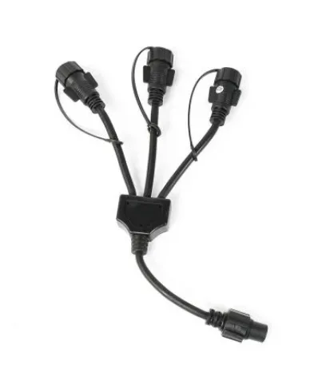

Fairy, Icicle & Net Lights
3 way fairy light power harness -Black
This 3 way black connector is manufactured especially for our mains voltage, 240V, connectable lights range and is available in either black or white rubber cable.
Using this accessory can create an impressive display when decorating all types of indoor and outdoor trees, making it so much easier to use several separate strings of lights connected together.
The connector is used to convert the single lead cable from the power pack into three outlets. This is a great way to run three separate light strings from the just the one plug. For example: if you wish to put lights on three separate trees that are close together, but only have one mains outlet. Simply run the lead cable from the power pack to the base of the trees and attach the connector. This will now give you three outlets, one for each tree.
This accessory is 32cm long and can be used to create a more advanced display, since multiple extension cables can be connected together to increase length as required.
Using this accessory can create an impressive display when decorating all types of indoor and outdoor trees, making it so much easier to use several separate strings of lights connected together.
The connector is used to convert the single lead cable from the power pack into three outlets. This is a great way to run three separate light strings from the just the one plug. For example: if you wish to put lights on three separate trees that are close together, but only have one mains outlet. Simply run the lead cable from the power pack to the base of the trees and attach the connector. This will now give you three outlets, one for each tree.
This accessory is 32cm long and can be used to create a more advanced display, since multiple extension cables can be connected together to increase length as required.
CategoryOutdoor & Garden Lighting
RangeFairy, Icicle & Net Lights
Weight0.5 kg
Tagsxmas light, splitter, split, harnes, fairylight, pealight